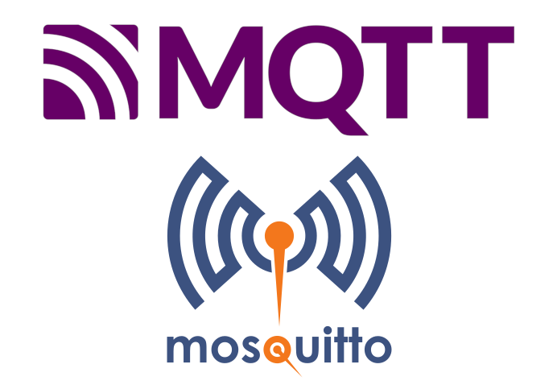
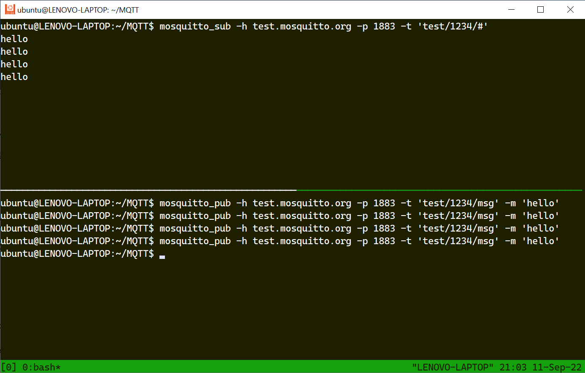
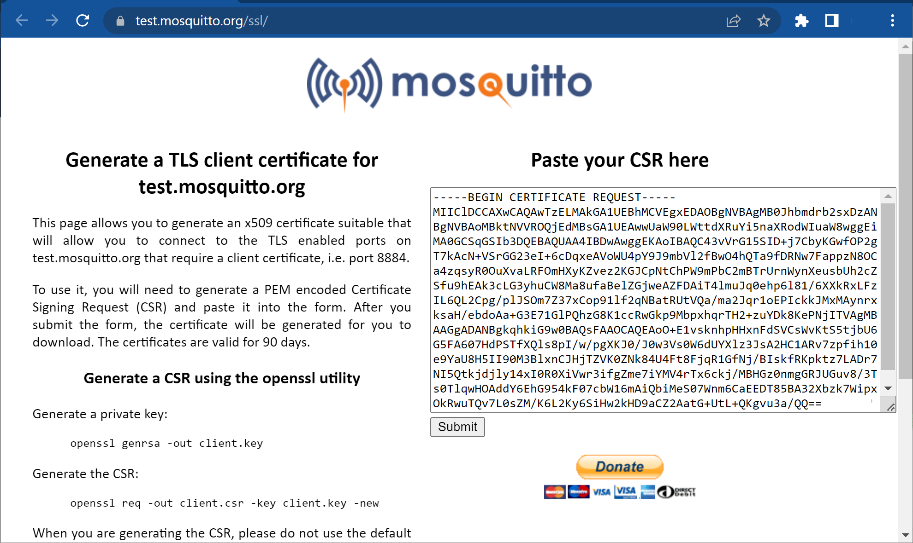
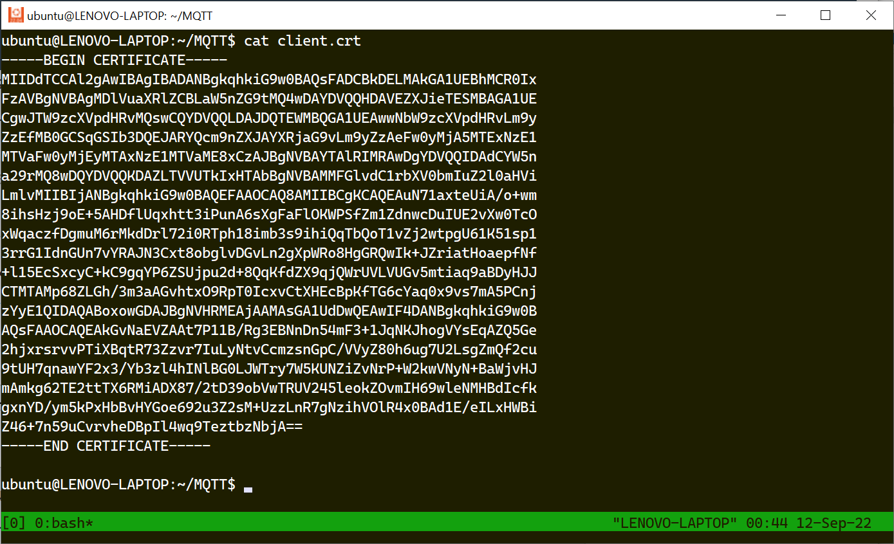
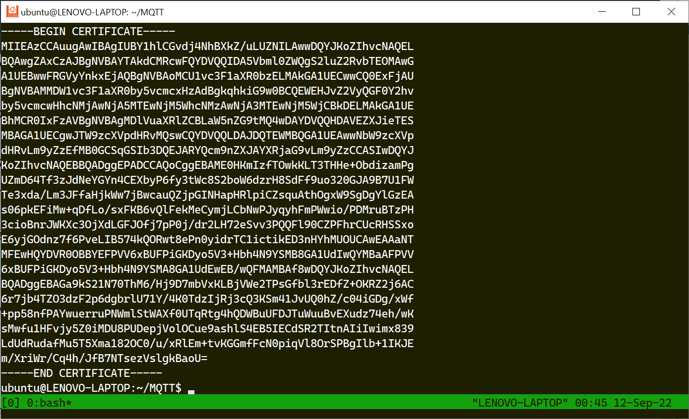
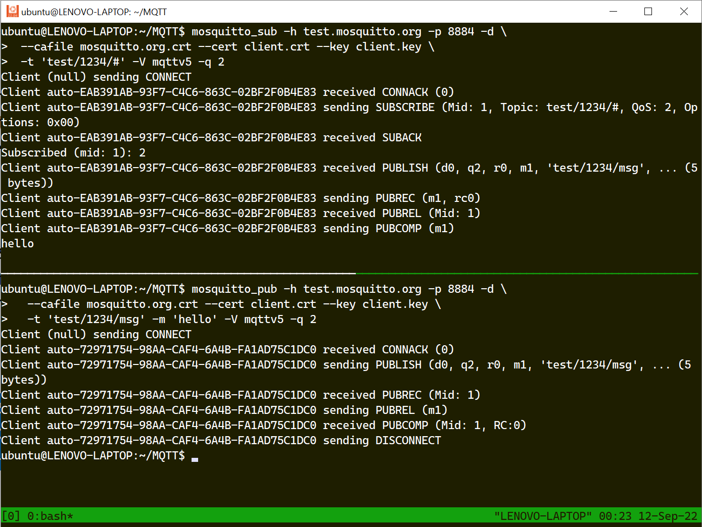
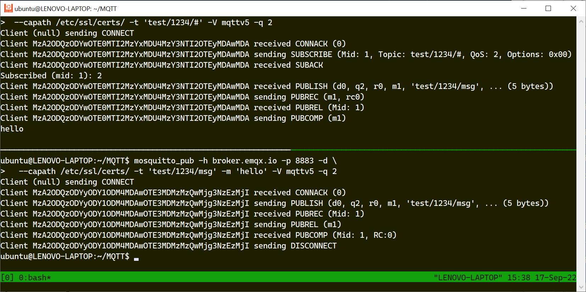

MQTT และการใช้งานสำหรับ Linux (ตอนที่ 2)#
▷ การทดลองใช้งาน Public MQTT Broker#
Eclipse Mosquitto เป็นซอฟต์แวร์ Open Source MQTT Broker และมีโปรแกรมที่ทำหน้าที่เป็น MQTT Clients สำหรับการเผยแพร่และสมัครรับข้อความกับโบรกเกอร์

รูป: Mosquitto MQTT Broker & MQTT Logos
การติดตั้งโปรแกรมเพื่อใช้คำสั่งของ Mosquitto Client เช่น
mosquitto_pub
และ mosquitto_sub
สำหรับระบบปฏบิติการ Linux (ใช้ Ubuntu 22.04 LTS) ทำได้ดังนี้
$ sudo apt update
$ sudo apt install mosquitto-clients -y
ในกรณีที่ต้องการเขียนโปรแกรมภาษา C จะต้องทำคำสั่งเพื่อติดตั้งไลบรารี Mosquitto Client C Libraryดังนี้
$ sudo apt install build-essential libmosquitto-dev -y
เมื่อได้ติดตั้งแพ็กเกจแล้ว ทดลองเรียกใช้คำสั่ง mosquitto_pub และ mosquitto_sub
(ในข้อความเอาต์พุตที่เป็นตัวอย่าง จะแสดงเวอร์ชัน 2.0.11)
$ mosquitto_pub --version
mosquitto_pub version 2.0.11 running on libmosquitto 2.0.11.
$ mosquitto_sub --version
mosquitto_sub version 2.0.11 running on libmosquitto 2.0.11.
ให้ทำคำสั่งต่อไปนี้ ในหน้าต่าง Terminal เพื่อเชื่อมต่อและสมัครรับข้อความตามหัวข้อ เช่น
'test/1234/#' และคอยรับข้อความจาก test.mosquitto.org
(ถ้าต้องการจบการทำงานของคำสั่ง ให้กด Ctrl+c)
# command to subscribe to a specific topic on localhost
$ mosquitto_sub -h test.mosquitto.org -p 1883 -t 'test/1234/#'
ในอีกหน้าต่าง Terminal (เปิดหน้าต่าง Terminal ใหม่ เพื่อทำคำสั่งใน Bash Shell)
ให้ทำคำสั่งต่อไปนี้ เพื่อเชื่อมต่อกับ test.mosquitto.org
และส่งข้อความไปยังโบรกเกอร์ โดยใช้หัวข้อ test/1234/msg ลองส่งข้อความหลาย ๆ ครั้ง
แล้วสังเกตดูว่า ได้รับข้อความกลับมาหรือไม่ ซึ่งจะแสดงผลในอีก Terminal ที่ได้เปิดไว้ก่อนหน้านั้น
# command to publish a message to a specific topic on localhost
$ mosquitto_pub -h test.mosquitto.org -p 1883 -t 'test/1234/msg' -m 'hello'
ถ้าเพิ่ม -d ในบรรทัดคำสั่ง mosquitto_pub ก็จะมีข้อความเอาต์พุตที่แสดงสถานะขั้นตอนการทำงานของโปรแกรม
และช่วยในการดีบัก หรือ Debug Messages
$ mosquitto_pub -h test.mosquitto.org -p 1883 -t 'test/1234/msg' -m 'hello' -d
Client (null) sending CONNECT
Client (null) received CONNACK (0)
Client (null) sending PUBLISH (d0, q0, r0, m1, 'test/1234/msg', ... (5 bytes))
Client (null) sending DISCONNECT
การทำคำสั่ง mosquitto_pub สามารถระบุค่าตัวเลือกได้ เช่น
-h hostชื่อหรือหมายเลขไอพีของเครื่องแม่ข่ายที่ทำหน้าที่เป็นโบรกเกอร์ที่ต้องการเชื่อมต่อ-p portหมายเลขพอร์ตของโบรกเกอร์-t topicชื่อหัวข้อในการเผยแพร่ข้อความ-m messageข้อความที่ต้องการส่งไปยังโบรกเกอร์-q qosระดับ QoS {0,1,2} เพื่อกำหนดระดับคุณภาพของการบริการส่งข้อมูล-dให้แสดงข้อความดีบักเมื่อโปรแกรมทำขั้นตอนต่าง ๆ-u user -P passwordชื่อบัญชีผู้ใช้และรหัสผ่านเพื่อขอใช้บริการกับโบรกเกอร์-i client-idตัวระบุชื่อสำหรับ MQTT client-k keepaliveระยะเวลา (วินาที) สำหรับ Clean Session Lifetime (default:60)-cเชื่อมต่อแบบ Persistent Session-V protocol-versionระบุเวอร์ชันของโพรโทคอลที่จะใช้งาน {mqttv5,mqttv311,mqttv31} (default =mqttv311)

รูป: ตัวอย่างการทำคำสั่ง mosquitto_sub และ mosquitto_pub
เชื่อมต่อกับ test.mosquitto.org:1883
ถ้าจะลองใช้ Public EMQX Broker ก็ให้เปลี่ยนเป็น -h broker.emqx.io -p 1883
▷ การส่งข้อความที่มีการเข้ารหัสข้อมูลและยืนยันตัวตน#
ถัดไปเป็นการทดลองเชื่อมต่อและส่งข้อความไปยังโบรกเกอร์ test.mosquitto.org โดยเลือกใช้พอร์ต เช่น 8884 ในกรณีนี้ จะต้องมีการเตรียมไฟล์ Client Certificate เอาไว้ใช้งาน
ขั้นตอนการสร้างไฟล์ดังนี้ (อ้างอิงจาก: TLS Client Certificate)
เริ่มต้นด้วยการสร้างไฟล์ CSR (Certificate Signing Request) และบันทึกไว้ในรูปแบบที่เรียกว่า
PEM Format โดยใช้คำสั่ง openssl และในการสร้างไฟล์ CSR จะต้องใส่ข้อมูลที่เรียกว่า
Distinguished Name (DN) ประกอบด้วย
- Common Name / FQDN (required) เช่น ใช้ชื่อ
iot-kmutnb.github.io - Organization (optional)
- Organization Unit (OU) (optional)
- City or Locality (optional)
- State or Province (optional)
- Two-letter Country Code (optional)
- Email Address (optional)
- Challenge Password (optional)
# Install the openssl utility
$ sudo apt install openssl -y
# Generate the RSA 2048-bit private key file (client.key)
# and the CSR file (client.csr)
$ openssl req -new -newkey rsa:2048 -nodes \
-keyout client.key -out client.csr
# Download the CA signed Server Certificate of Mosquitto.org
$ wget http://test.mosquitto.org/ssl/mosquitto.org.crt
เมื่อทำคำสั่ง openssl แล้ว จะได้ไฟล์ client.key ซึ่งต้องเก็บรักษาไว้เป็นความลับ และอีกไฟล์หนึ่งคือ
client.csr จากนั้นให้นำข้อความในไฟล์ client.csr ไปกรอกใส่ในฟอร์มบนหน้าเว็บของ Mosquitto
ซึ่งทำหน้าที่เป็น Online Client Certificate Generator
https://test.mosquitto.org/ssl/
แล้วกดปุ่ม Submit จะได้ไฟล์ client.crt ซึ่งเป็น SSL/TLS Client Certificate
มาใช้งานและมีอายุการใช้งานได้ 90 วัน

รูป: หน้าเว็บของ Mosquitto สำหรับกรอกข้อมูล CSR ของไคลเอนต์
เพื่อให้ตรวจสอบและสร้างไฟล์ client.crt (CA-signed Certificate for Client)

รูป: ข้อความภายในไฟล์ client.crt

รูป: ข้อความภายในไฟล์ mosquitto.org.crt
ถัดไปเป็นการลองใช้คำสั่ง mosquitto_sub และ mosquitto_pub เพื่อเชื่อมต่อกับพอร์ต 8884
ใช้ QoS 2 และโพรโทคอล MQTT v5.0 และให้สังเกตว่า จะต้องมีการใช้ไฟล์ต่อไปนี้ (เก็บอยู่ในไดเรกทอรีเดียวกัน)
mosquitto.org.crt( CA Certificate / Server Certificate for Mosquitto)client.crt(Client Cerficate)client.key(Client Private Key)
ทำคำสั่งบรรทัดเดียว เพื่อสมัครและรอรับข้อความ
$ mosquitto_sub -h test.mosquitto.org -p 8883 -d \
--cafile mosquitto.org.crt -t 'test/1234/#' -V mqttv5 -q 2
$ mosquitto_sub -h test.mosquitto.org -p 8884 -d \
--cafile mosquitto.org.crt --cert client.crt --key client.key \
-t 'test/1234/#' -V mqttv5 -q 2
ทำคำสั่งบรรทัดเดียว เพื่อส่งข้อความ
$ mosquitto_pub -h test.mosquitto.org -p 8884 -d \
--cafile mosquitto.org.crt --cert client.crt --key client.key \
-t 'test/1234/msg' -m 'hello' -V mqttv5 -q 2

รูป: ตัวอย่างการทำคำสั่ง mosquitto_sub และ mosquitto_pub
เชื่อมต่อกับ test.mosquitto.org:8884
แต่ถ้าจะลองใช้พอร์ต 8885 จะต้องระบุชื่อบัญชีผู้ใช้และรหัสผ่านด้วย ดังนี้
$ mosquitto_pub -h test.mosquitto.org -p 8885 -d \
--cafile mosquitto.org.crt --cert client.crt --key client.key \
-t 'test/1234/msg' -m 'hello' -V mqttv5 -q 2 \
-u 'rw' -P 'readwrite'
ถ้าต้องการทดสอบกับ EMQX MQTT Broker ให้ลองใช้พอร์ต 8883 ซึ่งจะมีการเข้ารหัสข้อมูลเท่านั้น ดังนั้นจึงไม่ต้องใช้ไฟล์ SSL/TLS Client Certificate (อ้างอิงจาก: "Public MQTT Broker for IoT Testing")
จากนั้นให้ลองทำคำสั่ง mosquitto_sub และ mosquitto_pub เพื่อเชื่อมต่อกับพอร์ต 8883
ใช้ QoS 2 และโพรโทคอล MQTT v5.0
ทำคำสั่งเพื่อสมัครและรอรับข้อความ (Client Authentication)
$ mosquitto_sub -h broker.emqx.io -p 8883 -d \
--capath /etc/ssl/certs/ -t 'test/1234/#' -V mqttv5 -q 2
ทำคำสั่งเพื่อเผยแพร่ข้อความ
$ mosquitto_pub -h broker.emqx.io -p 8883 -d \
--capath /etc/ssl/certs/ -t 'test/1234/msg' -m 'hello' -V mqttv5 -q 2

รูป: การเชื่อมต่อกับ broker.emqx.io:8883
▷ กล่าวสรุป#
บทความนี้สาธิตการเชื่อมต่อไปยังโบรกเกอร์สาธารณะ เช่น Mosquitto Broker และ EMQX Broker สำหรับการลองใช้งาน MQTT โดยใช้คำสั่งของ Mosquitto Pub/Sub Client ใน Linux
This work is licensed under a Creative Commons Attribution-ShareAlike 4.0 International License.
Created: 2022-09-10 | Last Updated: 2022-09-17